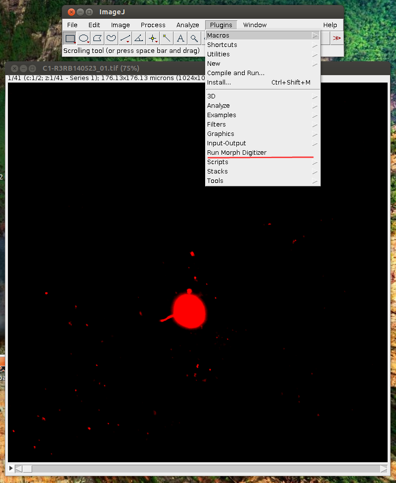
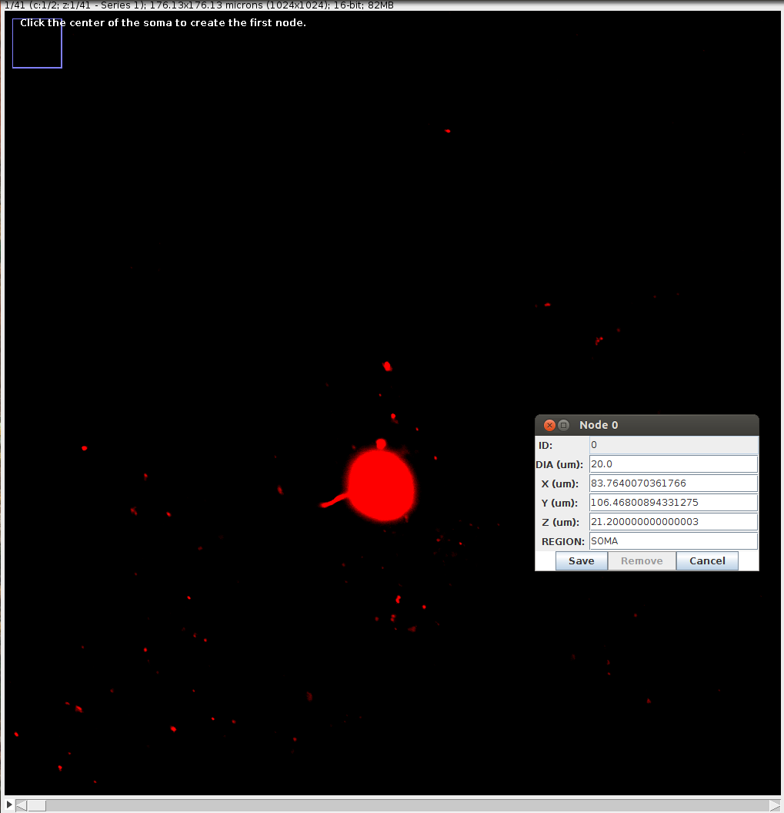
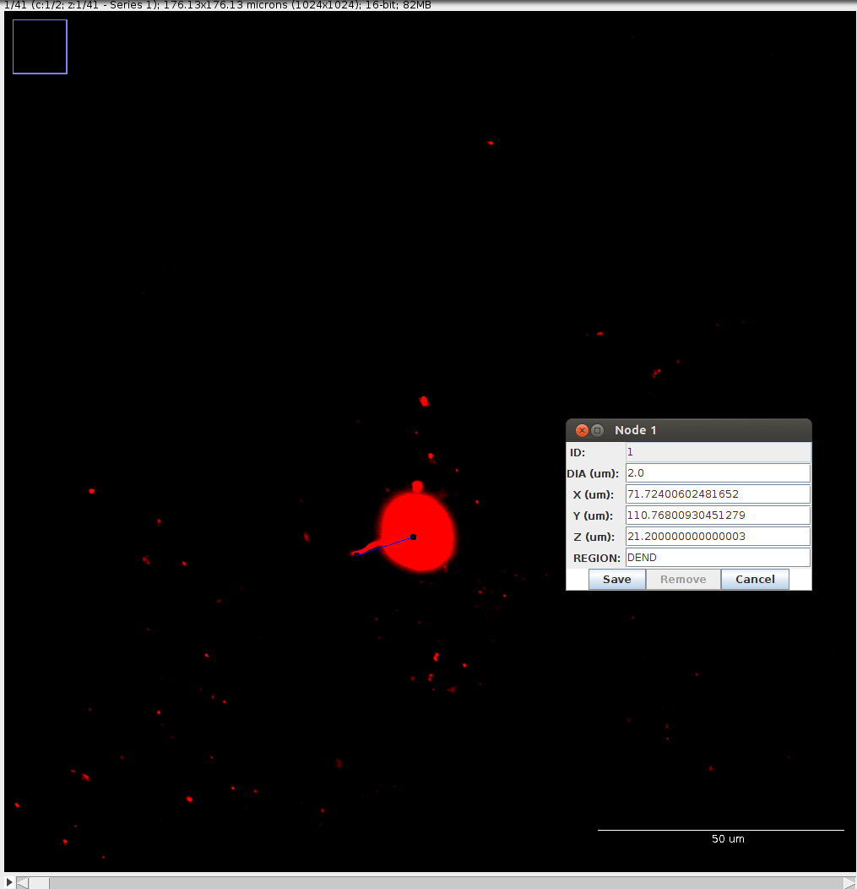
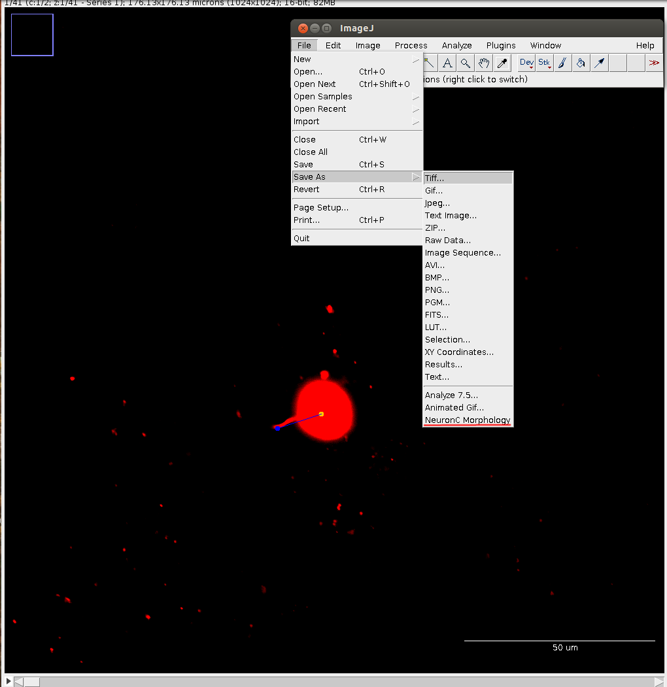

Building and Installing
Clone or Download from Github
At the command line, you can type:
git clone https://github.com/mschachter/IJMorphDig.git
Alternatively you can download a .zip file containing the source code if you click on the
"Download ZIP" button from the home page.
Build from Source
First, make sure you have a recent version of the Java SDK installed.
Then, make sure you have a recent version of Apache Ant installed, with the ant
script in your path.
When you have satisfied these requirements, go to the IJMorphDig directory, and type "ant", as follows:
cd IJMorphDig
ant
Some stuff should happen, and this should produce a file named Morph_Dig.jar
in the IJMorphDig/build/jar
directory. If
you have build errors, please file a bug report!
Copy .jar File to ImageJ
In order for the plugin to be used, copy Morph_Dig.jar to the ImageJ/plugins directory. You have now completed the steps to building and installing the plugin!
Using the Plugin with ImageJ
- Start ImageJ, and then open your image.
- Once the image is opened, select "Plugins->Run Morph Digitzer", underlined in red in the following screenshot:

- After the plugin is selected, the window will be rescaled, and text should appear that says "Click the center of the soma to create the first node".
-
Navigate to the slice of your stack that contains the the soma's center. Click the center of the soma. A small dialog box will appear that lets you set the diameter and region name of the soma. The (X,Y,Z) location is automatically determined from the scale of the image specified in the .tiff file. Be sure to set the diameter of your soma, then click "Save". Here is a screenshot of what this looks like:

-
A yellow dot will indicate the position of the soma. Now you have to define the first primary dendrite! Click the yellow dot, and a blue line will appear between the yellow dot and the position of your mouse. Align your mouse to the position of the first primary dendrite, and click. A new dialog box will appear that allows you to define the diameter of the dendrite. Also change the region to "DEND", as shown in the screenshot:

-
At this point, you can navigate through your stack by using the left and right arrow keys on your keyboard. To define further dendrites, click on a node - as before, a line will appear between the location of that node and your mouse location. Clicking again will create a connection between the two points, and allow you define the diameter and region.
-
When you're done doing all that, you can save to a neuronc anatomy file by going to "File->Save As->NeuronC Morphology", as shown in the screenshot:
